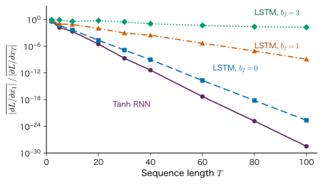
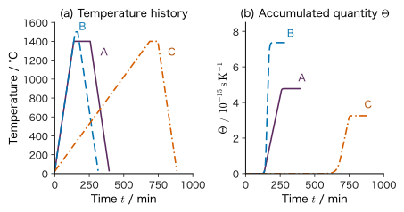

Chapter 23RNNs, LSTMs, and Sequence Representations — Networks with Memory
- How should we build a network so that it predicts the next token using information that appeared long ago, not just the last few tokens?
- When we predict a single quantity, such as the final density, from time series of different lengths, like temperature records of a firing furnace, how can the network “remember” the information from the intermediate steps?
- In principle an RNN (recurrent neural network) can use the whole history, so why does it have difficulty learning long-range dependencies? And what is it about this weakness that made the attention of the next chapter necessary?
Records of a process such as “heat up, hold, cool down,” as well as sentences and strings that represent molecules, are data in which the order carries meaning (sequences). In Chapter 22, we wrote the probability of a sequence by the autoregressive decomposition $p(x_{1:T})=\prod_t p(x_t\mid x_{\lt t})$ and shrank the condition $x_{\lt t}$ to “the last $n-1$ tokens” (n-gram) or “the previous hidden state” (hidden Markov model). In both cases, what can be remembered is limited to a small discrete table. For example, a 3-gram never looks back beyond two tokens.
In this chapter, we build the RNN (recurrent neural network), a network that summarizes the past in a continuous-valued vector $\bm{h}_t$ and carries it forward. Because the same weights are reused at every time step, the number of parameters does not change when the length of the sequence changes. Simply unrolling the neural networks and backpropagation of Chapters 14 and 15 along the time direction also gives us the learning equations. However, the unrolled chain becomes as deep as the sequence is long, and the gradient is multiplied by the same matrix each time it goes back one time step, so it vanishes or explodes. The LSTM mitigates this with a memory in the form of a sum (the cell state). Finally, we look at the limitation of the encoder–decoder, which maps one sequence to another, in “squeezing the entire input into a single fixed-length vector,” and summarize why we go on to attention in the next chapter.
- Represent tokens by one-hot vectors and embedding vectors, and explain that an embedding is “extracting a row of a matrix.”
- State the shape of each quantity in the RNN equation $\bm{h}_t=\tanh(\bm{W}_{hh}\bm{h}_{t-1}+\bm{W}_{xh}\bm{x}_t+\bm{b}_h)$, and compute 2–3 steps by hand with a small numerical example.
- Explain the loss used to train an RNN as a language model (the cross-entropy of the next token), teacher forcing, and the procedure for generation.
- Derive backpropagation through time (BPTT), and explain vanishing and exploding gradients from the fact that $\partial\bm{h}_t/\partial\bm{h}_k$ is a product of matrices.
- Write the equations of the LSTM gates and the cell state, and explain that the update of the cell state being an addition is the reason the gradient is preserved.
- State the three weaknesses of the RNN (the fixed-length vector limit of the encoder–decoder, sequential computation, and long paths), and describe how attention answers each of them.
Sections for the introductory route: 23.1, 23.2, 23.3, 23.5, 23.8, 23.11. Sections marked “Detailed Route” may be skipped on a first reading.
23.1 Feeding Sequences into a Neural Network — One-Hot Vectors and Embeddings
23.1.1 What is the problem? — Symbols and length
The neural networks of Chapter 14 took as input a real vector $\bm{x}\in\R^{D}$ of a fixed dimension $D$. If we try to feed sequence data into such a network as it is, we run into two problems.
- Symbols are not numbers: for the records of a process such as “heat up, hold, cool down,” for the words of a sentence, and for the characters of a string that represents a molecule, even if we assign numbers, which is larger and which is smaller has no meaning. “Cool down = 3” is not larger than “hold = 2” by 1.
- The lengths do not match: the number of process stages and the length of a sentence differ from sample to sample and from sentence to sentence. An input layer of fixed dimension can only pad with 0 to match the longest sequence (padding) or truncate. Both are unnatural, and moreover “heat up in stage 3” and “heat up in stage 5” enter different input units, so learning that they are the same operation requires separate data for each.
We answer the former with one-hot vectors and embeddings (this section), and the latter with recurrence, which reuses the same weights at every time step (Section 23.2).
23.1.2 Vocabulary, token IDs, and one-hot vectors
Each individual symbol in a sequence is called a token, the set of all possible tokens is called the vocabulary, and we write the vocabulary size as $V_{\mathrm{voc}}$ (we attach a subscript to distinguish it from the value matrix $\bm{V}$; Chapter 24). We assign each token in the vocabulary an integer number from $1,\dots,V_{\mathrm{voc}}$ (the token ID). In this chapter, we distinguish the token ID at position $t$, written in lightface as $x_t\in\{1,\dots,V_{\mathrm{voc}}\}$, from the vector used to feed it into the network, written in boldface as $\bm{x}_t$. The length of the sequence is $T$, and the positions are $t=1,\dots,T$.
Definition 23.1: One-hot vector
For a token ID $v\in\{1,\dots,V_{\mathrm{voc}}\}$, the one-hot vector (a vector in which exactly one entry is 1) is defined as the column vector $\bm{e}_v\in\{0,1\}^{V_{\mathrm{voc}}}$ whose $v$th component is 1 and whose other components are 0. The vectors $\bm{e}_1,\dots,\bm{e}_{V_{\mathrm{voc}}}$ form the standard basis of $\R^{V_{\mathrm{voc}}}$.
Any two one-hot vectors are orthogonal, and all the distances are equal to $\sqrt2$. Therefore they contain no relation whatsoever such as “hold” being more similar to “heat up” than to “cool down.” For representing symbols for which the size of the assigned number carries no meaning, this property of “assuming nothing” is a convenient starting point. On the other hand, the dimension equals the vocabulary size $V_{\mathrm{voc}}$ (tens of thousands for English words), so feeding the vector as it is into the first layer makes the number of weights large.
23.1.3 An embedding is extracting a row of a matrix
Definition 23.2: Embedding matrix and embedding vector
A matrix of learned parameters $\bm{W}_E\in\R^{V_{\mathrm{voc}}\times D}$ is called the embedding matrix, and its $v$th row is the embedding vector of token $v$. We define the input vector of the token $x_t$ at position $t$ as
\begin{equation} \bm{x}_t=\bm{W}_E^{\tp}\bm{e}_{x_t}\in\R^{D} \label{eq:23-embed} \end{equation}and call $D$ the dimension of the embedding.
Writing the matrix–vector product in Eq. \eqref{eq:23-embed} in components, we have $(\bm{W}_E^{\tp}\bm{e}_{v})_d=\sum_{u=1}^{V_{\mathrm{voc}}}(W_E)_{ud}\,(\bm{e}_v)_u$, and in the sum only the term with $u=v$ is nonzero, so
$$ (\bm{W}_E^{\tp}\bm{e}_{v})_d=(W_E)_{vd},\qquad d=1,\dots,D $$holds. That is, multiplying by a one-hot vector is the same as extracting the $v$th row of $\bm{W}_E$ and standing it up as a column vector (Figure 23.1). In an actual computation, we do not multiply; we simply read the row, using the ID as an index.
From another viewpoint, an embedding is “a fully connected layer with a one-hot vector as input, without bias and without activation.” In the notation of Chapter 14, it is a layer whose weight matrix is $\bm{W}_E^{\tp}\in\R^{D\times V_{\mathrm{voc}}}$, and its gradient is also obtained directly by the backward propagation of Chapter 15. However, of the gradient $\partial L/\partial\bm{W}_E$, the nonzero rows are only those of the tokens that appear in the minibatch. As learning proceeds, the embeddings of tokens that appear in similar contexts tend to come close to each other (the neural language model of Bengio et al. 2003 showed this property as an answer to the weakness of n-grams).
Example 23.1: Looking up an embedding by hand
We represent the record of a firing process as a sequence of tokens from the vocabulary {1 heat up, 2 hold, 3 cool down, 4 ⟨end⟩} (⟨end⟩ is a special token that marks the end of the record). Let the dimension of the embedding be $D=2$ and let the embedding matrix be
$$ \bm{W}_E=\begin{pmatrix}0.2&1.0\\-0.5&0.3\\0.8&-0.4\\0.1&-0.9\end{pmatrix}\in\R^{4\times2} $$(values for explanation). (1) Write the one-hot vector $\bm{e}_2$ of “hold” and compute $\bm{W}_E^{\tp}\bm{e}_2$ as a matrix product. (2) For a vocabulary of 50000 and an embedding dimension of 256, how many parameters does the embedding matrix have? If we fed the one-hot vector in as it is, what would the dimension of the input be?
Solution. (1) $\bm{e}_2=(0,1,0,0)^{\tp}$. Since $\bm{W}_E^{\tp}=\begin{pmatrix}0.2&-0.5&0.8&0.1\\1.0&0.3&-0.4&-0.9\end{pmatrix}$,
$$ \begin{aligned} (\bm{W}_E^{\tp}\bm{e}_2)_1&=0.2\cdot0+(-0.5)\cdot1\\ &\quad+0.8\cdot0+0.1\cdot0=-0.5,\\ (\bm{W}_E^{\tp}\bm{e}_2)_2&=1.0\cdot0+0.3\cdot1\\ &\quad+(-0.4)\cdot0+(-0.9)\cdot0=0.3 . \end{aligned} $$This is the second row $(-0.5,\ 0.3)$ of $\bm{W}_E$ stood up as a column. (2) $50000\times256=12{,}800{,}000$ parameters. The dimension of the one-hot vector is 50000, and the embedding shrinks this to 256 dimensions and passes it to the next layer.
23.2 The RNN — Summarizing the Past with the Same Weights
23.2.1 The idea — keep updating a state
Consider reading a temperature record once per minute while updating, in your head, a running sense of “how well the heat treatment has worked so far.” Each time a new reading arrives, you combine the summary you remember with the new reading, rewrite the summary, and discard the old reading itself. The amount you must remember is constant, regardless of the length of the record. The RNN is exactly this procedure written as equations. We call the summary the hidden state $\bm{h}_t$, and we build the new summary $\bm{h}_t$ from the previous summary $\bm{h}_{t-1}$ and the current input $\bm{x}_t$.
Definition 23.3: The RNN (Elman-type recurrent neural network)
Given an input sequence $\bm{x}_1,\dots,\bm{x}_T\in\R^{D}$ and an initial state $\bm{h}_0\in\R^{D_h}$ (usually $\bm{0}$), compute, in the order $t=1,2,\dots,T$,
\begin{equation} \begin{aligned} &\bm{h}_t=\tanh\bigl(\bm{W}_{hh}\bm{h}_{t-1}\\ &\qquad+\bm{W}_{xh}\bm{x}_t+\bm{b}_h\bigr) \end{aligned} \label{eq:23-rnn} \end{equation} \begin{equation} \bm{o}_t=\bm{W}_{hy}\bm{h}_t+\bm{b}_y \label{eq:23-out} \end{equation}Here $\tanh$ acts componentwise. We call $\bm{h}_t\in\R^{D_h}$ the hidden state, $D_h$ its dimension, and $\bm{o}_t\in\R^{K}$ the output (for classification, the logit before it is fed into a softmax). The parameters are $\bm{W}_{xh}\in\R^{D_h\times D}$, $\bm{W}_{hh}\in\R^{D_h\times D_h}$, $\bm{b}_h\in\R^{D_h}$, $\bm{W}_{hy}\in\R^{K\times D_h}$, and $\bm{b}_y\in\R^{K}$, and the same ones are used at every time step.
The expression inside the parentheses of Eq. \eqref{eq:23-rnn} is the pre-activation $\bm{W}\bm{z}+\bm{b}$ of a single layer from Chapter 14, with “the layer's own output one time step earlier, $\bm{h}_{t-1}$” added as an input. We therefore give the pre-activation $\bm{a}_t\in\R^{D_h}$ a name:
\begin{equation} \begin{aligned} \bm{a}_t&\equiv\bm{W}_{hh}\bm{h}_{t-1}+\bm{W}_{xh}\bm{x}_t+\bm{b}_h,\\ \bm{h}_t&=\tanh(\bm{a}_t) \end{aligned} \label{eq:23-pre} \end{equation}(we will use it in the backward propagation of Section 23.4). The quantity $\bm{h}_t$ in this chapter corresponds to the hidden-layer output $\bm{z}^{(l)}$ of Chapter 14; we write it as $\bm{h}$ following the convention of the sequence literature (it is a different quantity from the vertex feature $\bm{h}_i$ of the graphs in Chapter 16). The subscript $t$ is not a layer index but the time step.
23.2.2 Unrolling in time
Equation \eqref{eq:23-rnn} contains a loop that feeds its own output back to itself, so at first sight it differs from the “network in which information flows in one direction from input to output” of Chapter 14. But once the sequence length $T$ is fixed, we can write the loop out once per time step and redraw it as an ordinary network with $T$ layers (Figure 23.2). This is called unrolling in time. The feature of the unrolled network is that every stage shares the same weights $\bm{W}_{hh},\bm{W}_{xh},\bm{b}_h$. Just as the convolution of Chapter 16 shared weights along the spatial direction by “reusing the same filter at every position,” the RNN shares weights along the time direction.
Let us check the shape of each quantity in the unrolled diagram (Table 23.1). The input dimension $D$, the hidden-state dimension $D_h$, and the output dimension $K$ do not depend on the time step. Only the values of the vectors change with the time step; neither the shapes nor the values of the matrices change. Therefore the number of parameters does not depend on the sequence length $T$.
| Quantity | Shape | Changes with the time step? | Number of parameters |
|---|---|---|---|
| Input $\bm{x}_t$ | $D$ | Changes | — |
| Hidden state $\bm{h}_t$, pre-activation $\bm{a}_t$ | $D_h$ | Changes | — |
| $\bm{W}_{xh}$ | $D_h\times D$ | Shared | $D_hD$ |
| $\bm{W}_{hh}$ | $D_h\times D_h$ | Shared | $D_h^{2}$ |
| $\bm{b}_h$ | $D_h$ | Shared | $D_h$ |
| $\bm{W}_{hy}$, $\bm{b}_y$ | $K\times D_h$, $K$ | Shared | $K(D_h+1)$ |
| Output $\bm{o}_t$ | $K$ | Changes | — |
When we process $B$ sequences at once in a minibatch, as in Section 14.3 of Chapter 14, we arrange the inputs at time step $t$ as the columns of a $D\times B$ matrix and compute Eq. \eqref{eq:23-rnn} for all of them together. Sequences of different lengths are usually brought to the same length by filling the ends of the shorter ones with padding tokens, and the loss at the padded positions is not counted (it is masked). However, the computation at a time step $t$ cannot begin until $\bm{h}_{t-1}$ is available, so it cannot be parallelized along the time direction. We return to this point in Section 23.8 as a weakness of the RNN.
Why use tanh?
In Eq. \eqref{eq:23-rnn} the same transformation is repeated many times. If the activation were the identity map, $\bm{h}_t$ would grow or shrink like the $t$th power of $\bm{W}_{hh}$, and if the absolute value of an eigenvalue exceeded 1 even slightly, the values would grow without bound. Because $\tanh$ confines values to $(-1,1)$, the state stays bounded no matter how many times the step is repeated. Near 0 we have $\tanh a\approx a$ (slope 1), and the fact that it can take both positive and negative values also makes it convenient. However, this “confinement” produces saturation, which, as we will see in Section 23.5, is one of the causes of vanishing gradients.
Example 23.2: Running an RNN by hand for two steps
Take the embeddings of Example 23.1 ($D=2$) as the input, let the hidden-state dimension be $D_h=2$, and let $\bm{h}_0=\bm{0}$. Let the weights be
$$ \begin{aligned} \bm{W}_{xh}&=\bm{I}=\begin{pmatrix}1&0\\0&1\end{pmatrix},\\ \bm{W}_{hh}&=\begin{pmatrix}0.5&-0.5\\0.5&0.5\end{pmatrix},\qquad \bm{b}_h=\bm{0} \end{aligned} $$(values chosen for illustration). For the input token sequence “heat up, hold,” that is, $\bm{x}_1=(0.2,\ 1.0)^{\tp}$ and $\bm{x}_2=(-0.5,\ 0.3)^{\tp}$, find $\bm{h}_1,\bm{h}_2$. Give the numbers to four decimal places.
Solution. Time step 1: Since $\bm{h}_0=\bm{0}$, we have $\bm{W}_{hh}\bm{h}_0=\bm{0}$, and the pre-activation is $\bm{a}_1=\bm{x}_1=(0.2,\ 1.0)^{\tp}$. Taking tanh componentwise gives
$$ \begin{aligned} \bm{h}_1&=\bigl(\tanh 0.2,\ \tanh 1.0\bigr)^{\tp}\\ &=(0.1974,\ 0.7616)^{\tp}. \end{aligned} $$Time step 2: First compute the contribution from the summary of the past.
$$ \begin{aligned} (\bm{W}_{hh}\bm{h}_1)_1&=0.5\times0.1974-0.5\times0.7616\\ &=-0.2821,\\ (\bm{W}_{hh}\bm{h}_1)_2&=0.5\times0.1974+0.5\times0.7616\\ &=0.4795. \end{aligned} $$Adding the current input $\bm{x}_2$ to this, the first component of $\bm{a}_2$ is $-0.2821-0.5=-0.7821$ and the second component is $0.4795+0.3=0.7795$. Taking tanh gives
$$ \begin{aligned} \bm{h}_2&=\bigl(\tanh(-0.7821),\ \tanh 0.7795\bigr)^{\tp}\\ &=(-0.6539,\ 0.6524)^{\tp}. \end{aligned} $$The state $\bm{h}_2$ contains not only the information of “hold,” $\bm{x}_2$, but also, through $\bm{W}_{hh}\bm{h}_1$, the information of the preceding “heat up.” For example, the second component $0.6524$ is a value that the contribution $0.4795$ from $\bm{h}_1$ has pushed up from what would have been $\tanh 0.3=0.2913$ for $\bm{x}_2$ alone.
23.3 The RNN as a Language Model — Predicting the Next Token
23.3.1 Supplying each factor of the autoregressive decomposition with an RNN
Repeatedly applying the product rule of Chapter 2, Section 2.2, we can write the probability of any sequence of length $T+1$ as
\begin{equation} \begin{aligned} &p(x_{1:T+1})\\ &\quad=p(x_1)\prod_{t=1}^{T}p(x_{t+1}\mid x_{\le t}) \end{aligned} \label{eq:23-ar} \end{equation}(We take the length to be $T+1$ so that there are exactly $T$ predictions of the next token, as in the notation of Chapter 26.) Here $x_{\le t}\equiv(x_1,\dots,x_t)$ (this is an identity, not an approximation; it differs from $\prod_{t}p(x_t\mid x_{\lt t})$ of Chapter 22 only by a shift of the index by one). To build a probability model of sequences (a language model, in the case of text) is to supply the conditional distributions $p(x_{t+1}\mid x_{\le t})$ on the right-hand side for conditions $x_{\le t}$ of varying length. The n-gram truncates the condition to the preceding $n-1$ tokens, and the hidden Markov model summarizes it in a single discrete hidden state. The RNN summarizes the entire condition $x_{\le t}$ in a continuous-valued vector $\bm{h}_t$ and produces the distribution of the next token from it.
Definition 23.4: RNN language model
Embed the token sequence $x_1,\dots,x_t$ by Eq. \eqref{eq:23-embed} and compute up to $\bm{h}_t$ by Eq. \eqref{eq:23-rnn}. Take the output dimension to be the vocabulary size $K=V_{\mathrm{voc}}$, and let the distribution of the next token be the result of passing the logit $\bm{o}_t=\bm{W}_{hy}\bm{h}_t+\bm{b}_y\in\R^{V_{\mathrm{voc}}}$ through the softmax.
\begin{equation} \begin{aligned} &p(x_{t+1}=v\mid x_{\le t})\\ &\quad=\softmax(\bm{o}_t)_v\\ &\quad=\frac{\exp(o_{t,v})}{\sum_{u}\exp(o_{t,u})} \end{aligned} \label{eq:23-lm} \end{equation}Here $v=1,\dots,V_{\mathrm{voc}}$, and the sum in the denominator is taken over $u=1,\dots,V_{\mathrm{voc}}$. $o_{t,v}$ is the $v$th component of $\bm{o}_t$.
$\bm{h}_t$ depends on all of $x_1,\dots,x_t$ ($\bm{h}_t$ depends on $\bm{x}_{t-1}$ through $\bm{h}_{t-1}$, on $\bm{x}_{t-2}$ through $\bm{h}_{t-2}$, and so on), so the condition in Eq. \eqref{eq:23-lm} is, in principle, the entire history. This is the essential difference from the n-gram. How accurately the entire history can be remembered, however, is a separate question, and it is the subject of Section 23.5.
| Model | Summary of the past | Range of memory | Parameters |
|---|---|---|---|
| n-gram (Chapter 22) | The preceding $n-1$ tokens themselves | Up to $n-1$ tokens; nothing earlier is seen | A table of probabilities; its size grows in proportion to $V_{\mathrm{voc}}^{\,n}$ |
| Hidden Markov model (Chapter 22) | A discrete hidden state $z_t\in\{1,\dots,K\}$ | In principle the entire history (but summarized in only $K$ ways) | Tables of the transition matrix and the emission probabilities |
| RNN language model (this section) | A continuous-valued vector $\bm{h}_t\in\R^{D_h}$ | In principle the entire history (in actual training, long-range dependencies are difficult; Section 23.5) | Matrices (independent of the sequence length) |
The hidden Markov model (Chapter 22, Section 22.3; detailed route) places behind the observations an invisible state $z_t$ taking $K$ values; $z_t$ changes depending only on the immediately preceding state, and the observation at each time step is generated from $z_t$ alone (Figure 22.1(c)). The middle row of the table can be read as a method of shrinking the past into one of $K$ discrete summaries.
23.3.2 Training: the next-token cross-entropy and teacher forcing
Let a single sequence of the training data be $x_1,\dots,x_{T+1}$ ($x_1$ is the first token; a special token marking the beginning of a sentence is sometimes placed there). The correct answer at position $t=1,\dots,T$ is “the token that actually came next,” $x_{t+1}$. Taking its one-hot vector as the target $\bm{y}_t=\bm{e}_{x_{t+1}}$, the loss becomes the cross-entropy (the negative log-likelihood), just as for multiclass classification in Chapter 14, Section 14.6. In accordance with the convention for neural networks in this book (Chapters 14 and 15), we average over the number of predictions $T$ (the same form as the equation in Chapter 26).
\begin{equation} \begin{aligned} L&=-\frac{1}{T}\sum_{t=1}^{T}\ln p(x_{t+1}\mid x_{\le t})\\ &=\frac{1}{T}\sum_{t=1}^{T}\ell_t,\\ \ell_t&\equiv-\ln\softmax(\bm{o}_t)_{x_{t+1}} \end{aligned} \label{eq:23-loss} \end{equation}This is $-1/T$ times the log-likelihood $\ln p(x_{2:T+1}\mid x_1)$ of Eq. \eqref{eq:23-ar}, so minimizing $L$ is the same as maximum likelihood estimation (Chapter 5, Section 5.5: minimizing the cross-entropy is minimizing the KL divergence from the data distribution). Differentiating $\ell_t$ with respect to $\bm{o}_t$, the result of Chapter 14, Section 14.6 can be used as it is:
\begin{equation} \pdiff{\ell_t}{\bm{o}_t}=\bm{p}_t-\bm{y}_t \label{eq:23-outgrad} \end{equation}Here $\bm{p}_t\equiv\softmax(\bm{o}_t)\in\R^{V_{\mathrm{voc}}}$ is the probability vector of the prediction, and the right-hand side is that vector minus the one-hot vector of the correct answer.
As the input during training, we feed in not the tokens predicted by the model itself but the correct tokens of the training data $x_1,\dots,x_{T}$ as they are (Figure 23.3(a)). This is called teacher forcing (Williams & Zipser 1989 gave it this name). Because the correct tokens are fed in, a single sequence yields $T$ “next-token prediction problems” at once, and even if a prediction is wrong partway through, the training at later time steps is not disturbed.
At generation time there is no correct answer, so starting from the first token (or a special start token), we repeat the following until ⟨end⟩ appears: (i) compute the distribution of the next token by Eq. \eqref{eq:23-lm}; (ii) choose one token from it (greedy decoding, which chooses the one with the largest probability, or sampling according to the probabilities); (iii) use the chosen token as the input at the next time step (Figure 23.3(b)). This difference, the correct token is fed in during training, and the model's own output is fed in during generation, remains in GPT just as it is (Chapter 26).
Example 23.3: Next-token probabilities and the loss
Add to the RNN of Example 23.2 the output weights $\bm{W}_{hy}=2\begin{pmatrix}1&1\\-1&1\\1&-1\\-1&-1\end{pmatrix}\in\R^{4\times2}$ and $\bm{b}_y=\bm{0}$ to make it a language model (the rows are in the order of the vocabulary IDs; these are values for explanation, and nothing has been trained). Feed in the sequence “heat up, hold, cool down, ⟨end⟩” (there are $T+1=4$ tokens, and $T=3$ predictions) by teacher forcing. The hidden state at the third input, “cool,” is $\bm{h}_3=(0.1458,\ -0.3806)^{\tp}$. (1) Find the logit $\bm{o}_1$ and the probability $\bm{p}_1$ at $t=1$, and answer what the probability of the correct token “hold” is. (2) Using the fact that the probabilities of the correct tokens at $t=2,3$ are $0.0047$ and $0.2940$, respectively, find $L$ of Eq. \eqref{eq:23-loss} and the perplexity $\exp(L)$. (3) Compare with $L$ of an untrained “uniformly guessing” model.
Solution. (1) Use $\bm{h}_1=(0.1974,\ 0.7616)^{\tp}$ from Example 23.2. Taking the dot product of each row of $\bm{W}_{hy}$ with $\bm{h}_1$ and doubling,
$$ \bm{o}_1=2\begin{pmatrix}0.1974+0.7616\\-0.1974+0.7616\\0.1974-0.7616\\-0.1974-0.7616\end{pmatrix}=\begin{pmatrix}1.9179\\1.1284\\-1.1284\\-1.9179\end{pmatrix}. $$Taking $\exp$ gives $(6.807,\ 3.091,\ 0.324,\ 0.147)$, whose sum is $10.368$, so $\bm{p}_1=(0.6565,\ 0.2981,\ 0.0312,\ 0.0142)$. The probability of the correct token “hold” (ID 2) is $0.2981$, and $\ell_1=-\ln0.2981=1.2103$.
(2) $\ell_2=-\ln0.0047=5.3669$ and $\ell_3=-\ln0.2940=1.2240$ (here we write the values of the logarithms taken from the probabilities before rounding).
$$ \begin{aligned} L&=\frac{1.2103+5.3669+1.2240}{3}=\frac{7.8012}{3}\\ &=2.6004,\qquad \exp(L)=13.47. \end{aligned} $$(3) For a model that assigns $1/4$ equally to the four tokens, $\ell_t=\ln4=1.3863$ at every time step, so $L=1.3863$ and the perplexity is 4. The model with arbitrary weights before training is worse than the uniform prediction (at $t=2$ it assigns only $0.0047$ to the correct token “cool”). The perplexity expresses “on average, how many choices the model is torn between” (treated in detail in Chapter 26), and training makes it smaller.
Counting the parameters of the RNN language model of Example 23.3, $\bm{W}_E$ has $4\times2=8$, $\bm{W}_{xh}$ has 4, $\bm{W}_{hh}$ has 4, $\bm{b}_h$ has 2, $\bm{W}_{hy}$ has 8, and $\bm{b}_y$ has 4, for a total of 30. This number does not depend on the sequence length.
Advanced Topic: The advantage of a continuous-valued summary
A 3-gram counts the distribution after “hold, cool” and the distribution after “hold, chill” as separate rows of the table, so even though “cool” and “chill” are similar words, the statistics of one are of no use to the other. With embeddings and an RNN, the embeddings of words that appear in similar contexts come close to each other, and $\bm{h}_t$ also takes close values, so what is learned for one spreads naturally to the other (it generalizes). Bengio et al. (2003) showed this effect with a neural network that takes a fixed-length context as input. The RNN further removes the restriction on the length of the context.
23.4 Backpropagation Through Time (BPTT)Detailed Route
23.4.1 Applying backpropagation to the unrolled network
When we unroll an RNN in time (Figure 23.2), it becomes an ordinary network with $T$ layers. Therefore the gradient can be computed by the backpropagation of Chapter 15. Two points, however, differ from Chapter 15. (i) The loss enters not only at the last layer but from the outputs at every time step ($\ell_t$ in Eq. \eqref{eq:23-loss}). (ii) Because the same weights appear in every layer, the gradient of a weight is the sum of the contributions from all time steps. This computation is called backpropagation through time (BPTT; Werbos 1990).
In the derivation, we omit the averaging coefficient $1/T$ and find the gradient of the sum of the losses at the individual time steps, $L=\sum_{t=1}^{T}\ell_t$ (the gradient of the average is just this divided by $T$). In a language model every time step has a loss, but so that the case in which only the last time step has a loss, as in Example 23.4, can be handled by the same formulas, we set $\ell_t=0$ for time steps without a loss. We fix the notation as follows.
- $\bm{g}_t\equiv\pdiff{L}{\bm{h}_t}\in\R^{D_h}$: the change in the total loss when $\bm{h}_t$ is moved. $\bm{h}_t$ affects $\ell_t$ through $\bm{o}_t$, and the losses at all later time steps through $\bm{a}_{t+1}$.
- $\bm{\delta}_t\equiv\pdiff{L}{\bm{a}_t}\in\R^{D_h}$: the error with respect to the pre-activation (Eq. \eqref{eq:23-pre}). It is obtained by replacing the layer index $l$ of $\bm{\delta}^{(l)}$ in Chapter 15 with the time step $t$.
Derivation: The BPTT equations
(1) Counting where $\bm{h}_t$ goes. The only equations in which $\bm{h}_t$ appears are the output $\bm{o}_t=\bm{W}_{hy}\bm{h}_t+\bm{b}_y$ (Eq. \eqref{eq:23-out}) and the pre-activation of the next time step, $\bm{a}_{t+1}=\bm{W}_{hh}\bm{h}_t+\bm{W}_{xh}\bm{x}_{t+1}+\bm{b}_h$. Adding the contributions of the two paths with the chain rule (University Mathematics, Section 6.4), we have for component $j$
$$ g_{t,j}=\sum_{k}\pdiff{\ell_t}{o_{t,k}}\pdiff{o_{t,k}}{h_{t,j}}+\sum_{m}\pdiff{L}{a_{t+1,m}}\pdiff{a_{t+1,m}}{h_{t,j}} . $$Since $\partial o_{t,k}/\partial h_{t,j}=(W_{hy})_{kj}$ and $\partial a_{t+1,m}/\partial h_{t,j}=(W_{hh})_{mj}$, in vector form this reads
\begin{equation} \begin{aligned} \bm{g}_t&=\bm{W}_{hy}^{\tp}(\bm{p}_t-\bm{y}_t)\\ &\quad+\bm{W}_{hh}^{\tp}\bm{\delta}_{t+1} \end{aligned} \label{eq:23-bptt-g} \end{equation}where $\bm{\delta}_{T+1}\equiv\bm{0}$. For the first term we used Eq. \eqref{eq:23-outgrad} (it is 0 at a time step without a loss). The condition $\bm{\delta}_{T+1}=\bm{0}$ expresses the fact that “nothing comes after the last time step.”
(2) Passing through tanh. The function $h_{t,j}=\tanh a_{t,j}$ acts component by component, and $\tanh'a=1-\tanh^{2}a$ (Chapter 14, Section 14.2), so $\partial h_{t,j}/\partial a_{t,j}=1-h_{t,j}^{2}$. Since $a_{t,j}$ affects $L$ only through $h_{t,j}$,
\begin{equation} \bm{\delta}_t=(\bm{1}-\bm{h}_t\odot\bm{h}_t)\odot\bm{g}_t \label{eq:23-bptt-d} \end{equation}($\odot$ is the componentwise product, and $\bm{1}$ is the vector whose components are all 1).
(3) The gradient of a shared weight is a sum. The component $(W_{hh})_{jm}$ of $\bm{W}_{hh}$ appears in the pre-activation $a_{t,j}=\sum_m(W_{hh})_{jm}h_{t-1,m}+\cdots$ at every time step. Adding the contribution of each time step, $\partial L/\partial a_{t,j}\cdot\partial a_{t,j}/\partial(W_{hh})_{jm}=\delta_{t,j}h_{t-1,m}$, over all time steps, we obtain
\begin{equation} \begin{aligned} \pdiff{L}{\bm{W}_{hh}}&=\sum_{t=1}^{T}\bm{\delta}_t\bm{h}_{t-1}^{\tp},\\ \pdiff{L}{\bm{W}_{xh}}&=\sum_{t=1}^{T}\bm{\delta}_t\bm{x}_t^{\tp},\\ \pdiff{L}{\bm{b}_h}&=\sum_{t=1}^{T}\bm{\delta}_t \end{aligned} \label{eq:23-bptt-w} \end{equation}The weights of the output layer appear only in $\bm{o}_t$ at each time step, so likewise
$$ \pdiff{L}{\bm{W}_{hy}}=\sum_{t=1}^{T}(\bm{p}_t-\bm{y}_t)\bm{h}_t^{\tp} $$holds. The term for a single time step has the same form as $\partial L/\partial\bm{W}^{(l)}=\bm{\delta}^{(l)}\bm{z}^{(l-1)\tp}$ in Chapter 15; the only difference is the sum over time steps.
∎
The procedure for the computation is: (i) forward-propagate in the order $t=1,\dots,T$ with Eqs. \eqref{eq:23-rnn} and \eqref{eq:23-out}, and store all of $\bm{h}_t$ and $\bm{p}_t$; (ii) in the reverse order $t=T,T-1,\dots,1$, compute $\bm{\delta}_t$ with Eqs. \eqref{eq:23-bptt-g} and \eqref{eq:23-bptt-d}, and add it into the sums in Eq. \eqref{eq:23-bptt-w}. The computational cost is proportional to $T$, as for forward propagation, but the amount of storage also grows in proportion to $T$.
23.4.2 Products of Jacobian matrices
Combining Eqs. \eqref{eq:23-bptt-g} and \eqref{eq:23-bptt-d}, we can see what is multiplied each time the error goes back one time step. The matrix obtained by differentiating $\bm{h}_t$ with respect to $\bm{h}_{t-1}$ (the Jacobian matrix, whose $(j,m)$ component is $\partial h_{t,j}/\partial h_{t-1,m}$) is, from Eq. \eqref{eq:23-rnn},
$$ \pdiff{h_{t,j}}{h_{t-1,m}}=(1-h_{t,j}^{2})\,(W_{hh})_{jm}, $$or, written as a matrix,
$$ \pdiff{\bm{h}_t}{\bm{h}_{t-1}}=\diag\bigl(\bm{1}-\bm{h}_t\odot\bm{h}_t\bigr)\,\bm{W}_{hh}\in\R^{D_h\times D_h} $$($\diag(\bm{v})$ is the matrix with the vector $\bm{v}$ arranged along the diagonal). Linking time step $k$ to $t$ ($k\lt t$) with the chain rule gives
\begin{equation} \begin{aligned} \pdiff{\bm{h}_t}{\bm{h}_k}&=\pdiff{\bm{h}_t}{\bm{h}_{t-1}}\cdots\pdiff{\bm{h}_{k+1}}{\bm{h}_k}\\ &=\prod_{i=k+1}^{t}\bigl[\diag\bigl(\bm{1}-\bm{h}_i\odot\bm{h}_i\bigr)\\ &\qquad\quad\times\bm{W}_{hh}\bigr] \end{aligned} \label{eq:23-jac} \end{equation}Here the product is arranged from the left in the order $i=t,t-1,\dots,k+1$ (the order of a matrix product cannot be interchanged). How much the loss at time step $t$ is affected through the state at time step $k$ is determined by $\bigl(\partial\bm{h}_t/\partial\bm{h}_k\bigr)^{\tp}\partial\ell_t/\partial\bm{h}_t$. The gradient between distant time steps is a product in which the same matrix $\bm{W}_{hh}$ is multiplied $t-k$ times. This is the starting point of the vanishing and exploding gradients in the next section.
Example 23.4: Hand calculation of BPTT for a scalar RNN
Consider an RNN whose hidden state and input are both one-dimensional, $h_t=\tanh(wh_{t-1}+ux_t)$ ($h_0=0$, no bias). Let $w=0.8$, $u=1.0$, and input $x_{1:3}=(1,0,0)$, and let the loss be $L=\tfrac12(h_3-y)^{2}$ at the last time step only, with $y=0.2$. (1) Find $h_1,h_2,h_3$ and $L$. (2) Find $\partial L/\partial w$ by BPTT and show the contribution of each time step. (3) Compare with the central difference $\{L(w+\epsilon)-L(w-\epsilon)\}/(2\epsilon)$ (Chapter 15, Section 15.4).
Solution. (1) $a_1=0.8\cdot0+1\cdot1=1$, $h_1=\tanh1=0.76159$. $a_2=0.8\times0.76159=0.60928$, $h_2=0.54362$. $a_3=0.8\times0.54362=0.43489$, $h_3=0.40940$. $L=\tfrac12(0.40940-0.2)^{2}=0.021925$.
(2) Start from the last time step. $g_3=\partial L/\partial h_3=h_3-y=0.20940$ and $1-h_3^{2}=0.83239$, so $\delta_3=0.83239\times0.20940=0.17430$. Time step 2 has no loss, so $g_2=w\,\delta_3=0.13944$ (only the second term of Eq. \eqref{eq:23-bptt-g}), and from $1-h_2^{2}=0.70448$ we get $\delta_2=0.70448\times0.13944=0.09823$. Similarly, $g_1=w\,\delta_2=0.07859$, and from $1-h_1^{2}=0.41998$ we get $\delta_1=0.41998\times0.07859=0.03301$. By the one-dimensional version of Eq. \eqref{eq:23-bptt-w}, $\partial L/\partial w=\sum_t\delta_th_{t-1}$,
$$ \begin{aligned} \pdiff{L}{w}&=\delta_3h_2+\delta_2h_1+\delta_1h_0\\ &=0.09476+0.07481+0=0.16957 . \end{aligned} $$The term at time step 3 (the contribution from $h_2$) is the largest, and $\delta_t$ becomes smaller the further back we go. Similarly, $\partial L/\partial u=\sum_t\delta_tx_t=\delta_1=0.03301$, so the gradient of the weight $u$ attached to the first input is determined only by the small $\delta_1$, which is three steps back.
(3) The central difference with $\epsilon=10^{-5}$ is $0.1695704$, which agrees with the BPTT value $0.1695704$ to seven digits.
23.4.3 Truncated BPTT
For a long sequence (for example, 86400 points recorded once per second over a day), storing all of the $\bm{h}_t$ and backpropagating all the way to the first time step is heavy, both in memory capacity and in computation time. We therefore divide the sequence into segments of length $\tau$. The forward propagation continues, carrying the hidden state across segment boundaries, but the backward propagation is carried out only within each segment, and the error is not passed back beyond a boundary. This is called truncated BPTT. Dependencies longer than $\tau$, even though they remain in $\bm{h}_t$ in the forward propagation, cannot be learned from the gradient. The truncation length must be chosen longer than the length of the dependencies we want to learn.
23.5 Long-Range Dependencies and Vanishing and Exploding Gradients
23.5.1 The gradient multiplies the same number many times
Let us restate the conclusion of Section 23.4 (detailed route) in one sentence: the gradient of the loss at time $t$ with respect to the state at time $k$ is determined by the product of $t-k$ Jacobian matrices (matrices that arrange the derivatives) $\diag(\bm{1}-\bm{h}_i\odot\bm{h}_i)\bm{W}_{hh}$, taken over $i=k+1,\dots,t$ (Eq. \eqref{eq:23-jac}).
Matrices make the picture hard to see, so we study the simplest RNN, with a one-dimensional hidden state, a one-dimensional weight, and no input,
\begin{equation} \begin{aligned} h_t&=\tanh(w\,h_{t-1}),\\ \pdiff{h_t}{h_0}&=\prod_{i=1}^{t}w\bigl(1-h_i^{2}\bigr) \end{aligned} \label{eq:23-scalar} \end{equation}(the second equation multiplies together the derivative of each stage, $\partial h_i/\partial h_{i-1}=w(1-h_i^{2})$, because in one dimension a product of matrices becomes a product of numbers). The absolute value of each factor satisfies $\abs{w}(1-h_i^{2})\le\abs{w}$, so
\begin{equation} \abs{\pdiff{h_t}{h_0}}\le\abs{w}^{t} \label{eq:23-bound} \end{equation}always holds.
- If $\abs{w}\lt1$, the gradient necessarily vanishes: the upper limit $\abs{w}^{t}$ approaches 0 exponentially in $t$, so the gradient to the distant past necessarily becomes small (vanishing gradient). For $w=0.5$, it is $0.5^{10}\approx9.8\times10^{-4}$ after 10 steps and $9.5\times10^{-7}$ after 20 steps.
- If $\abs{w}\gt1$, the gradient can explode: if $h$ stays near 0 (where the slope of tanh is close to 1), each factor is approximately $w$, and the gradient grows as $w^{t}$ (exploding gradient). For $w=2$, it is $2^{10}=1024$ times larger after 10 steps.
However, the gradient does not always explode when $\abs{w}\gt1$. Starting from $h_0=0.5$, as in Figure 23.4(b), for $w=2$ the state $h_t$ quickly enters the saturated region of tanh (where $h^{*}=0.9575$, which satisfies $h^{*}=\tanh(2h^{*})$), each factor becomes $2(1-0.9575^{2})=0.166$, and the gradient instead vanishes quickly. For $w=1$, $h_t$ approaches 0 slowly, so the gradient decreases more slowly than exponentially. To summarize, what Eq. \eqref{eq:23-bound} tells us is that “$\abs{w}\lt1$ is a sufficient condition for vanishing and $\abs{w}\gt1$ is a necessary condition for exploding”; what actually happens depends on where the state travels. For matrices, the same holds if $\abs{w}$ is replaced by the largest singular value (the spectral norm) of $\bm{W}_{hh}$ (Pascanu, Mikolov & Bengio 2013).
![Two semi-log plots. The horizontal axis is time t (0 to 30), and the vertical axis is the absolute value of the partial derivative dh_t/dh_0. (a) For h_0=0, w=2 grows linearly up to 10 to the 9th power, w=1 stays at 1, and w=0.5 decreases linearly to 10 to the minus 9th power. (b) For h_0=0.5, w=1 decreases slowly, w=0.5 decreases with almost the same slope as in (a), and w=2 decreases most steeply, reaching 10 to the minus 11th power at t=15 and then falling below the lower limit of the vertical axis.](figs/ch23_fig23-4.svg)
Example 23.5: A gradient traced back 10 steps
For the RNN of Eq. \eqref{eq:23-scalar}, (1) when $h_0=0$, find $\partial h_{10}/\partial h_0$ for each of $w=0.5,\ 1.0,\ 2.0$. (2) When $h_0=0.5$ and $w=2$, find $h_1$, $h_2$, and the first two factors $w(1-h_1^{2})$ and $w(1-h_2^{2})$. Compare the value after 10 steps, $2.14\times10^{-7}$ (a numerical result), with (1), and explain what happened.
Solution. (1) If $h_0=0$, then $h_1=\tanh0=0$, and likewise $h_i=0$ for every subsequent step, so each factor is $w(1-0)=w$. Hence $\partial h_{10}/\partial h_0=w^{10}$, and $0.5^{10}=9.77\times10^{-4}$, $1^{10}=1$, $2^{10}=1024$.
(2) $h_1=\tanh(2\times0.5)=\tanh1=0.7616$, and the factor is $2(1-0.7616^{2})=2\times0.4200=0.8400$. $h_2=\tanh(2\times0.7616)$ $=\tanh1.5232=0.9093$, and the factor is $2(1-0.9093^{2})=2\times0.1733=0.3465$ ($0.8400\times0.3465=0.2911$, which agrees with the value $0.291$ at $t=2$ in the figure). The state saturates at a value close to 1, and the later factors are about $0.166$. Even for the same $w=2$, the gradient explodes by a factor of 1024 for $h_0=0$, whereas it vanishes to $2.14\times10^{-7}$ for $h_0=0.5$. The saturation of tanh makes the gradient vanish.
23.5.2 Why can’t “long-range dependencies” be learned?
When the gradient vanishes, most of the learning signal comes from the recent past. For example, in a task where we must answer at the end with a quantity determined by the first token of the sequence, the gradient that carries the error of the answer back to the first token shrinks by a factor such as $10^{-10}$ over the dozens of steps in between, so the weights cannot learn how the first token should be summarized. The gradient in the direction that lowers the loss using clues from the recent past is far larger, so learning proceeds in that direction. Bengio, Simard & Frasconi (1994) showed that, in this sense, it is difficult to learn long-range dependencies by gradient descent.
An exploding gradient causes the opposite problem. If the gradient becomes extremely large at just one time step, a single update makes the weights jump far away and destroys the learning done so far. Typical symptoms are that the value of the loss suddenly jumps up or becomes NaN (not a number).
23.5.3 Gradient clipping
A simple and effective remedy for explosion is gradient clipping. Arrange the gradients of all parameters into one vector $\bm{g}$; if its length exceeds the upper limit $\theta\gt0$, shrink only the length to $\theta$ without changing the direction.
\begin{equation} \bm{g}\ \leftarrow\ \begin{cases}\bm{g} & (\norm{\bm{g}}\le\theta)\\[2pt] \dfrac{\theta}{\norm{\bm{g}}}\,\bm{g} & (\norm{\bm{g}}\gt\theta)\end{cases} \label{eq:23-clip} \end{equation}Because the direction is preserved, the direction that lowers the loss does not change, and only the magnitude of a single update is limited (Pascanu et al. 2013). Clipping is effective against explosion, but it does not help against vanishing (it does not enlarge small gradients). The remedy for vanishing is to change the structure (the LSTM in the next section).
Example 23.6: Gradient clipping
When the gradient is $\bm{g}=(30,\ -40)$, find the gradient clipped with the upper limit $\theta=5$. Verify that the direction does not change before and after clipping.
Solution. Since $\norm{\bm{g}}=\sqrt{30^{2}+40^{2}}=\sqrt{2500}=50\gt5$, we get $\bm{g}\leftarrow(5/50)\bm{g}=(3,\ -4)$. The length is $\sqrt{9+16}=5=\theta$. Both the vector before and the vector after are positive constant multiples of $(0.6,\ -0.8)$, so the direction is the same. The difference from the method of truncating each component to $[-5,5]$ is that the latter gives $(5,\ -5)$, which changes the direction.
23.6 The LSTM — Carrying Memory by AdditionDetailed Route
23.6.1 The idea: update by addition, not multiplication
The RNN gradient vanishes because the state update $\bm{h}_t=\tanh(\bm{W}_{hh}\bm{h}_{t-1}+\cdots)$ has the form “multiply the previous state by a matrix and pass it through tanh,” and its derivative is multiplied in at every step. So, if the body of the memory is updated by addition, as in
$$ \bm{c}_t=\bm{c}_{t-1}+(\text{newly written amount}) $$then $\partial\bm{c}_t/\partial\bm{c}_{t-1}=\bm{I}$, and the gradient does not shrink no matter how many steps we trace back. However, if we only add, everything keeps accumulating, so we regulate “how much to forget,” “how much to write,” and “how much to show to the outside” with gates, which take values from 0 to 1. This is the idea of the LSTM (long short-term memory; Hochreiter & Schmidhuber 1997). The “forget gate” in the form commonly used today was added by Gers, Schmidhuber & Cummins (2000).
Notation: the output gate of the LSTM is written q
Many references write the output gate of the LSTM as $\bm{o}_t$, but in this book $\bm{o}_t$ is used for the logit (Eq. \eqref{eq:23-out}), so we write the output gate as $\bm{q}_t$. $\sigma(a)=1/(1+e^{-a})$ is the sigmoid function; here it is not the standard deviation.
Definition 23.5: LSTM
From the input $\bm{x}_t\in\R^{D}$, the previous output $\bm{h}_{t-1}\in\R^{D_h}$, and the cell state $\bm{c}_{t-1}\in\R^{D_h}$, compute in the following order ($\sigma$ and $\tanh$ act componentwise, and $\odot$ is the componentwise product). From the top, these are the forget gate, the input gate, the output gate, and the candidate to be written.
\begin{equation} \begin{aligned} \bm{f}_t&=\sigma(\bm{W}_{xf}\bm{x}_t\\&\qquad+\bm{W}_{hf}\bm{h}_{t-1}+\bm{b}_f)\\ \bm{i}_t&=\sigma(\bm{W}_{xi}\bm{x}_t\\&\qquad+\bm{W}_{hi}\bm{h}_{t-1}+\bm{b}_i)\\ \bm{q}_t&=\sigma(\bm{W}_{xq}\bm{x}_t\\&\qquad+\bm{W}_{hq}\bm{h}_{t-1}+\bm{b}_q)\\ \tilde{\bm{c}}_t&=\tanh(\bm{W}_{xc}\bm{x}_t\\&\qquad+\bm{W}_{hc}\bm{h}_{t-1}+\bm{b}_c) \end{aligned} \label{eq:23-gates} \end{equation} \begin{equation} \bm{c}_t=\bm{f}_t\odot\bm{c}_{t-1}+\bm{i}_t\odot\tilde{\bm{c}}_t \label{eq:23-cell} \end{equation} \begin{equation} \bm{h}_t=\bm{q}_t\odot\tanh(\bm{c}_t) \label{eq:23-lstmh} \end{equation}The shapes are $\bm{f}_t,\bm{i}_t,\bm{q}_t\in(0,1)^{D_h}$, $\tilde{\bm{c}}_t,\bm{c}_t\in\R^{D_h}$, and $\bm{h}_t\in(-1,1)^{D_h}$. The weights are four sets of $\bm{W}_{x\cdot}\in\R^{D_h\times D}$, $\bm{W}_{h\cdot}\in\R^{D_h\times D_h}$, and $\bm{b}_{\cdot}\in\R^{D_h}$, shared across all time steps. As in the RNN, the output $\bm{o}_t$ is made from $\bm{h}_t$ by Eq. \eqref{eq:23-out}.
The roles of the gates, in words, are as follows (Figure 23.5).
- Forget gate $\bm{f}_t$: what fraction of each component of the previous cell state to keep. If it is 1, everything is kept; if it is 0, it is erased.
- Input gate $\bm{i}_t$: what fraction of the candidate $\tilde{\bm{c}}_t$ to write.
- Output gate $\bm{q}_t$: how much of the cell state to show to the outside (the output $\bm{h}_t$ and the gate computations at the next time step).
The gate values are not fixed to 0 or 1; they are computed from the current input and $\bm{h}_{t-1}$, and open and close depending on the data.
23.6.2 Why is the gradient preserved?
Differentiate Eq. \eqref{eq:23-cell} with respect to $\bm{c}_{t-1}$. The gates $\bm{f}_t,\bm{i}_t$ and the candidate $\tilde{\bm{c}}_t$ depend on $\bm{c}_{t-1}$ indirectly through $\bm{h}_{t-1}$, but first consider the path that follows only the route of the cell state directly:
\begin{equation} \begin{aligned} \left.\pdiff{\bm{c}_t}{\bm{c}_{t-1}}\right|_{\text{direct}}&=\diag(\bm{f}_t),\\ \left.\pdiff{\bm{c}_t}{\bm{c}_k}\right|_{\text{direct}}&=\diag\Bigl(\prod_{i=k+1}^{t}\bm{f}_i\Bigr) \end{aligned} \label{eq:23-cellgrad} \end{equation}(“direct” is the path that follows only the route of the cell state, and the product is componentwise). Compared with Eq. \eqref{eq:23-jac} for the RNN, there are three differences.
- The matrix $\bm{W}_{hh}$ is not multiplied in: we only multiply componentwise numbers $f_{i,j}$, so the result does not depend on the size of eigenvalues or singular values.
- There is no shrinkage from tanh saturation: the cell state is passed to the next time step without going through tanh (tanh is used only when showing it to the outside).
- The data can choose the factor: if the forget gate is close to 1, the gradient reaches far away, dozens of steps, almost unchanged. When there is no longer any need to remember, $f$ is brought close to 0 to forget.
For example, if $f=0.99$ continues, $0.99^{100}=0.366$ remains even after 100 steps. To keep a comparable amount in an RNN, each factor of Eq. \eqref{eq:23-jac} would have to be almost exactly 1, and both the slope of tanh and the matrix would have to be tuned at the same time. Note that Eq. \eqref{eq:23-cellgrad} looks only at the direct path; indirect paths through the gates also contribute to the gradient. The LSTM does not “eliminate” the vanishing gradient; it provides one path along which the gradient does not vanish.
For this path to work, it is important that the forget gate be open at the start of learning ($\bm{f}_t$ close to 1). If $\bm{b}_f=\bm{0}$, the gate is initially about $\sigma(0)=0.5$, so the gradient is multiplied by 0.5 at each step and vanishes just as in the RNN. Hence there is a practice of initializing the bias of the forget gate to a positive value such as 1 (Jozefowicz, Zaremba & Sutskever 2015 report the effect of a bias of 1 in an experiment comparing many structures). Figure 23.6 compares, for networks before training, the magnitude of the gradient that reaches the first input from the loss at the last time step. For the tanh RNN it decreases exponentially with the sequence length $T$, reaching $10^{-29}$ at $T=100$ in the setting of the figure. The LSTM with $b_f=0$ also vanishes in the same way, but with $b_f=3$ ($\sigma(3)=0.95$), 0.017 remains even at $T=100$. These values depend on the random numbers used for initialization; if we recompute with a different set of seeds, the value at $T=100$ varies from $10^{-30}$ to $10^{-23}$ for the tanh RNN and from about 0.02 to 1 for $b_f=3$. Even so, the trend does not change: the tanh RNN and the LSTM with $b_f=0$ are smaller by many orders of magnitude, and the larger $b_f$ is, the more remains.

Figure 23.6 shows “whether the learning signal reaches,” not whether learning itself succeeds. Even if the gradient that reaches is small, methods such as Adam (Chapter 7, Section 7.6), which determine the step size by dividing by the magnitude of the gradient, or sufficiently many iterations may still allow learning; conversely, even if the gradient reaches, learning fails if the task is difficult. Even so, if the gradient that reaches is as small as $10^{-20}$, there is almost no prospect of learning that dependency.
Example 23.7: Running an LSTM by hand for one step
Consider an LSTM with hidden-state dimension $D_h=1$. At some time step the pre-activations (the quantities inside the parentheses of $\sigma$ and $\tanh$ in Eq. \eqref{eq:23-gates}) are $2.0$ for the forget gate, $-1.0$ for the input gate, $0.5$ for the candidate, and $0$ for the output gate. The previous cell state is $c_{t-1}=0.8$. (1) Find $f_t,i_t,\tilde{c}_t,q_t$, and compute $c_t$ and $h_t$. (2) Suppose this $f_t$ persists for 20 steps. What is the gradient $\partial c_{t+19}/\partial c_{t-1}$ along the direct path? Compare it with the case $f=0.99$ and with a tanh RNN in which each factor is $0.5$.
Solution. (1) $f_t=\sigma(2)=1/(1+e^{-2})=0.8808$, $i_t=\sigma(-1)=0.2689$, $\tilde{c}_t=\tanh0.5=0.4621$, $q_t=\sigma(0)=0.5$. By Eq. \eqref{eq:23-cell},
$$ \begin{aligned} c_t&=0.8808\times0.8+0.2689\times0.4621\\ &=0.7046+0.1243=0.8289 . \end{aligned} $$By Eq. \eqref{eq:23-lstmh}, $\tanh0.8289=0.6799$, so $h_t=0.5\times0.6799=0.3399$. In other words, 88 % of the old memory was kept and 27 % of the candidate was written in.
(2) By Eq. \eqref{eq:23-cellgrad}, $0.8808^{20}=0.0790$. For $f=0.99$ we get $0.99^{20}=0.818$, and for an RNN with each factor $0.5$ we get $0.5^{20}=9.5\times10^{-7}$. How long the memory lasts depends strongly on how close the forget-gate value is to 1.
23.6.3 The number of parameters and the GRU
An LSTM has four sets of weights, as in Eq. \eqref{eq:23-gates}, so the number of parameters in one layer is $4D_h(D+D_h+1)$, which is four times that of an RNN with the same $D,D_h$ ($D_h(D+D_h+1)$).
A simplified variant of the LSTM is the GRU (gated recurrent unit; Cho et al. 2014). It has no cell state and updates the hidden state itself as a “weighted average of the previous value and a new candidate.” In the notation of this book (we write $\bm{u}_t$ for the update gate and $\bm{r}_t$ for the reset gate; we avoid $\bm{z}$ because it is already used for the output of a hidden layer and for latent variables), it reads
$$ \begin{aligned} \bm{u}_t&=\sigma(\bm{W}_{xu}\bm{x}_t+\bm{W}_{hu}\bm{h}_{t-1}+\bm{b}_u),\\ \bm{r}_t&=\sigma(\bm{W}_{xr}\bm{x}_t+\bm{W}_{hr}\bm{h}_{t-1}+\bm{b}_r),\\ \tilde{\bm{h}}_t&=\tanh\bigl(\bm{W}_{xh}\bm{x}_t\\ &\qquad+\bm{W}_{hh}(\bm{r}_t\odot\bm{h}_{t-1})+\bm{b}_h\bigr),\\ \bm{h}_t&=(\bm{1}-\bm{u}_t)\odot\bm{h}_{t-1}+\bm{u}_t\odot\tilde{\bm{h}}_t \end{aligned} $$If $\bm{u}_t=\bm{0}$, then $\bm{h}_t=\bm{h}_{t-1}$ is copied unchanged, so, as in the LSTM, there is a “path that does not vanish.” There are three sets of weights, and the number of parameters is $3D_h(D+D_h+1)$. Note that the literature differs on whether $\bm{u}_t$ multiplies $\tilde{\bm{h}}_t$ or $\bm{h}_{t-1}$ (Cho et al. 2014 multiply it on the side of $\bm{h}_{t-1}$), so take care when reading.
23.7 From Sequence to Sequence — Encoder and DecoderDetailed Route
23.7.1 The problem of different input and output lengths
Some tasks, such as translation (a Japanese sentence → an English sentence), summarization, or “a record of a process → a description of the process,” have sequences for both input and output, and their lengths and correspondence do not match. An RNN that emits one output at each input time step (Section 23.3) cannot handle them. So we use two RNNs (Sutskever, Vinyals & Le 2014; Cho et al. 2014).
- encoder: reads the input sequence $\bm{x}_1,\dots,\bm{x}_T$ to produce hidden states $\bm{h}^{\mathrm{enc}}_1,\dots,\bm{h}^{\mathrm{enc}}_T$, and takes the last state as the context vector $\bm{c}\equiv\bm{h}^{\mathrm{enc}}_T\in\R^{D_h}$ (the $\bm{c}$ of this section is a different quantity from the cell state of the LSTM).
- decoder: builds an initial state from $\bm{c}$ and generates the output sequence $y_1,y_2,\dots$ one token at a time, in the same way as the language model of Section 23.3. Writing the decoder's time step (the output position) as $i$ and its hidden state as $\bm{s}_i$, we have
The output length $T'$ is determined at the moment the decoder emits the end token. Training minimizes the negative logarithm of Eq. \eqref{eq:23-seq2seq} over correct translation pairs $(x_{1:T},y_{1:T'})$, feeding the decoder the correct $y_{\lt i}$ by teacher forcing.
23.7.2 The fixed-length vector bottleneck
In Eq. \eqref{eq:23-seq2seq}, all the decoder can know about the input is just the $D_h$ numbers in $\bm{c}$. Whether the input is 5 words or 50 words, it must be squeezed into a vector of the same size (Figure 23.7(a)). Moreover, since $\bm{c}$ is the last state, for the same reason as the vanishing gradient of Section 23.5 the earlier part of the input tends to have a weaker influence on $\bm{c}$. Sutskever et al. (2014) reported that feeding the input in reversed word order (placing the first words near $\bm{c}$) greatly improves translation performance. This shows that “how close a position is to $\bm{c}$” was affecting performance. Bahdanau et al. (2015) also pointed out that the performance of the basic encoder–decoder drops sharply as sentences get longer, citing a separate report by Cho and coauthors from the same year.
Example 23.8: A linear encoder puts weight on recent inputs
Take a one-dimensional linear RNN $h_t=a\,h_{t-1}+x_t$ ($h_0=0$) as the encoder, and use the last state $c=h_{10}$ for an input of length $T=10$ as the context. (1) Show that $c=\sum_{t=1}^{10}a^{10-t}x_t$. (2) For $a=0.5$ and $a=0.9$, find the coefficients multiplying $x_1$ and $x_{10}$.
Solution. (1) Substituting successively, $h_1=x_1$, $h_2=ax_1+x_2$, $h_3=a^{2}x_1+ax_2+x_3$, and so on; the input at time step $t$ is multiplied by $a$ a further $10-t$ times, so $h_{10}=\sum_{t=1}^{10}a^{10-t}x_t$. (2) The coefficient of $x_{10}$ is $a^{0}=1$ in both cases. The coefficient of $x_1$ is $a^{9}$: for $a=0.5$ it is $0.5^{9}=0.00195$, and for $a=0.9$ it is $0.9^{9}=0.387$. Bringing $a$ closer to 1 keeps the old inputs as well, but then the context approaches the sum of all the inputs, and the distinction of “what was at which position” fades. As long as everything is squeezed into a single vector, we cannot escape this dilemma.
23.8 The Motivation for Attention
So far we have seen that an RNN is a model that “advances while summarizing the entire history into a single vector,” that this summary tends to fade the farther back in the past we look (Section 23.5), and that the LSTM alleviates this. For tasks that map one sequence to another (translation, for example), a scheme was used in which an encoder RNN reads the whole input and passes only its single final hidden state to a decoder RNN, which then generates the output (Section 23.7; detailed route). This framework has three weaknesses. Each of them leads directly to the design of attention in the next chapter.
23.8.1 Weakness 1 — the fixed-length bottleneck
All that the decoder can know about the input is the $D_h$ numbers of the final hidden state (Figure 23.7(a)). The capacity does not grow even when the input becomes longer. Bahdanau, Cho & Bengio (2015) pointed this out as “the fixed-length vector becomes a bottleneck” and proposed a scheme in which each time one output is produced, the hidden states at all input positions are looked at again, and information is gathered with weights from wherever it is needed (Figure 23.7(b)). Without discarding the hidden states $\bm{h}_1,\dots,\bm{h}_T$ of the encoder at all time steps, we form, at the decoder position $i$ (writing $j$ for the input position),
\begin{equation} \begin{aligned} \bm{c}_i&=\sum_{j=1}^{T}A_{ij}\,\bm{h}_j,\\ A_{ij}&=\frac{\exp(e_{ij})}{\sum_{j'=1}^{T}\exp(e_{ij'})} \end{aligned} \label{eq:23-attn} \end{equation}a context dedicated to position $i$, $\bm{c}_i\in\R^{D_h}$. Here $e_{ij}$ is a score expressing “how strongly the decoder's current state is related to input position $j$”; it is computed by a small neural network and trained together with the whole model. The weight $A_{ij}$ is “the proportion that output position $i$ gathers from input position $j$,” and because it is a softmax, it satisfies $A_{ij}\ge0$ and $\sum_jA_{ij}=1$ for each $i$ (the same letter and index order are used as for the attention weights $A_{ij}$ of Chapter 24; collected into a matrix $\bm{A}$, each row sums to 1). The vector $\bm{c}_i$ is a weighted average over the input positions. When the input becomes longer, the number of candidates to be added up also increases.
Example 23.9: Rereading with weights
The encoder has three hidden states $\bm{h}_1=(1,0)^{\tp}$, $\bm{h}_2=(0,1)^{\tp}$, $\bm{h}_3=(1,1)^{\tp}$, and at some decoder position $i$ the scores were $(e_{i1},e_{i2},e_{i3})=(2,\ 0,\ -1)$. (1) Find the weights $A_{ij}$ and the context $\bm{c}_i$. (2) When the input length is $T=1000$, by how many RNN steps does the path differ, compared with the scheme that passes only the final hidden state, before the information at input position 1 reaches output position $i$?
Solution. (1) Taking $\exp$ gives $(e^{2},e^{0},e^{-1})=(7.389,\ 1,\ 0.368)$, whose sum is $8.757$. Hence
$$ \begin{aligned} (A_{i1},A_{i2},A_{i3})&=\Bigl(\frac{7.389}{8.757},\ \frac{1}{8.757},\ \frac{0.368}{8.757}\Bigr)\\ &=(0.8438,\ 0.1142,\ 0.0420). \end{aligned} $$The sum is 1. The context is
$$ \begin{aligned} \bm{c}_i&=0.8438\begin{pmatrix}1\\0\end{pmatrix}+0.1142\begin{pmatrix}0\\1\end{pmatrix}+0.0420\begin{pmatrix}1\\1\end{pmatrix}\\ &=\begin{pmatrix}0.8858\\0.1562\end{pmatrix} \end{aligned} $$which is close to $\bm{h}_1$, the one with the largest score. (2) In the scheme that passes only the final hidden state, the information at position 1 passes through 999 updates of the encoder RNN, $\bm{h}_1\to\bm{h}_2\to\cdots\to\bm{h}_{1000}$, before it reaches the decoder. In Eq. \eqref{eq:23-attn}, $\bm{h}_1$ enters $\bm{c}_i$ directly with weight $A_{i1}$, so it passes through no encoder step at all.
23.8.2 Weakness 2 — computation can only proceed in order
The computation at time step $t$ of an RNN requires $\bm{h}_{t-1}$, so the $T$ time steps can only be computed in order, $T$ times (Section 23.2). A GPU is good at carrying out a large number of independent computations simultaneously, but an RNN cannot exploit this parallelism along the time direction. The longer the sequences and the larger the data used for training, the more this constraint matters. In the weighted average of attention (Eq. \eqref{eq:23-attn}), the computation at any position can be carried out without waiting for the results at other positions, so all positions can be computed at once. The self-attention of the next chapter goes further and replaces the encoder RNN itself with attention, so that the computation inside the sequence is also parallel.
23.8.3 Weakness 3 — the path between distant positions is long
In an RNN, for the information at position $k$ to reach position $t$ it must pass through $t-k$ updates, and the gradient likewise traces a path of the same length backward and becomes a product of $t-k$ factors (Section 23.5). In attention, any two positions are connected by a single weight, so the path length is 1 regardless of the sequence length. Gradients reach distant positions more easily, and long-range dependencies are easier to learn. In exchange, scores are computed for all pairs of positions, so the computational cost grows as the square of the sequence length.
| Aspect | RNN, LSTM | self-attention |
|---|---|---|
| Number of computations that must be done sequentially | $T$ (in time order) | 1 (all positions at once) |
| Length of the path connecting positions $k$ and $t$ | $\abs{t-k}$ | 1 |
| Computational complexity | $O(Td^{2})$ | $O(T^{2}d)$ |
| Size of the summary of the past | Constant (the $d$ numbers of $\bm{h}_t$) | Keeps the vectors of all positions (proportional to $T$) |
| Order information | Built into the order of the computation itself | Not included; positional information is added separately (Chapter 25) |
The last two rows of the table are the price paid on the attention side. An RNN needs only a constant amount of memory per step and handles order naturally. Attention keeps all positions and must be told the order separately. The three chapters from the next one on deal with why, and how, a design (the Transformer) that gains parallelism and short paths even at this price has achieved great success in large-scale learning.
23.9 Connections to Materials Engineering and Condensed Matter Physics — Temperature Histories and Molecular StringsDetailed Route
23.9.1 Predicting final properties from a temperature history
In the sintering of ceramics, even for the same maximum temperature, the final density changes with the heating speed and the holding time. The furnace record is a sequence of “the temperature every minute,” whose length differs from run to run, and what we want to predict is a single number (the final relative density). A problem of this kind, “read a sequence and give one answer at the end” (many-to-one), can in form be solved by attaching a linear layer to the final hidden state $\bm{h}_T$ of the RNN of Section 23.2.
Here we add a little background from the physics side. Densification by sintering is a thermally activated process that proceeds by atomic diffusion, and its speed increases sharply with temperature in the form $\exp\{-Q/(RT)\}$ (Arrhenius type; $Q$ is the activation energy, $R$ the gas constant, and $T$ the absolute temperature). Under the same powder and the same forming conditions, when the diffusion mechanism governing densification can be regarded as a single one, and the geometric quantities describing the microstructure can be regarded as determined by the density alone, there is the idea that the density is a function of a quantity that gathers the whole temperature history into a single integral
\begin{equation} \Theta=\int_0^{t}\frac{1}{T(t')}e^{-Q/(RT(t'))}\,\dd t' \label{eq:23-msc} \end{equation}(the master sintering curve; Su & Johnson 1996). Here $Q$ is an apparent activation energy, chosen so that the results of experiments at several heating rates collapse onto a single curve. The unit of $\Theta$ is $\mathrm{s\,K^{-1}}$, and it can be read as an “accumulation of the effect of heat.” It is also known that the results may fail to collapse onto a single curve when the mechanism changes midway or when the way grains grow depends on the history.
Discretizing Eq. \eqref{eq:23-msc} with a time step $\Delta t$ gives
\begin{equation} \Theta_k=\Theta_{k-1}+\frac{\Delta t}{T_k}\,e^{-Q/(RT_k)} \label{eq:23-mscrec} \end{equation}This is precisely an RNN whose hidden state is one-dimensional, with $W_{hh}=1$, no tanh, and a nonlinear function of the input added in. In other words, the “summary of the temperature history” suggested by the physics has the same structure as the update of the LSTM cell state (Eq. \eqref{eq:23-cell}) with the forget gate set to 1. With a tanh RNN and a summary with $W_{hh}\lt1$, the contribution from 600 steps earlier fades to about $W_{hh}^{600}$ times its size, so it is difficult to represent this “accumulation.” Figure 23.8 shows Eq. \eqref{eq:23-mscrec} summed up every minute for three temperature histories (teaching setups). Most of $\Theta$ grows while the temperature is near the maximum. History C takes more than twice as long overall as A, but its hold at the maximum temperature is half that of A, so its final $\Theta$ is smaller. On the other hand, the contribution during the slow heating is about five times larger for C ($0.87\times10^{-15}\ \mathrm{s\,K^{-1}}$) than for A ($0.17\times10^{-15}\ \mathrm{s\,K^{-1}}$).

Example 23.10: How many minutes at 1400 °C is 10 minutes at 1500 °C worth?
Compare the contribution of one step of Eq. \eqref{eq:23-mscrec}, $\Delta t\,T^{-1}\exp\{-Q/(RT)\}$, at 1400 °C and at 1500 °C, with $Q=480\ \mathrm{kJ\,mol^{-1}}$ (a provisional value) and $R=8.314\ \mathrm{J\,mol^{-1}\,K^{-1}}$. (1) Find the ratio of the contributions at the two temperatures. (2) In terms of the contribution to $\Theta$, a 10-minute hold at 1500 °C corresponds to a hold of how many minutes at 1400 °C? (3) From this result, what problem arises if the temperature history is expressed by only two numbers, the “maximum temperature” and the “holding time,” and regressed on?
Solution. (1) The absolute temperatures are $T_1=1673.15\ \mathrm{K}$ and $T_2=1773.15\ \mathrm{K}$. The ratio is
$$ \frac{T_1}{T_2}\exp\!\left[\frac{Q}{R}\Bigl(\frac{1}{T_1}-\frac{1}{T_2}\Bigr)\right]. $$From $\dfrac{Q}{R}=\dfrac{480000}{8.314}=57734\ \mathrm{K}$ and
$$ \begin{aligned} \frac{1}{T_1}-\frac{1}{T_2}&=5.977\times10^{-4}-5.640\times10^{-4}\\ &=3.371\times10^{-5}\ \mathrm{K^{-1}} \end{aligned} $$the exponent is $57734\times3.371\times10^{-5}=1.946$, and $e^{1.946}=7.00$. Multiplying this by $T_1/T_2=0.9436$ gives a ratio of $6.61$. (2) $10\times6.61=66.1$ minutes. (3) The contribution changes exponentially with temperature, so even for the same “maximum temperature and holding time,” the contribution of the time spent during heating and cooling differs from history to history, and two numbers cannot distinguish them (with the same calculation as Figure 23.8, if the 60-minute hold at 1400 °C is common to both, then $\Theta=2.55$ for heating at 10 °C/min and $3.25$ for heating at 2 °C/min (history C), in units of $10^{-15}\ \mathrm{s\,K^{-1}}$, a difference of about a factor of 1.3). One must use either a model that reads the whole history (an RNN) or a physics-based summary quantity ($\Theta$) as a feature.
When fitting actual materials data, note the following points.
- Amount of data: A furnace run takes several hours, so the number of records is often only a few tens to a few hundred. An LSTM has tens of thousands of parameters, so as it stands it overfits easily (Chapter 6). With little data, it is often more reliable to use a physics-based summary quantity such as Eq. \eqref{eq:23-msc} as a feature and predict with the linear regression of Chapter 8 or the Gaussian process of Chapter 12. One possible order is to use the RNN as an aid for learning the part that the physical summary cannot explain.
- Unit of splitting: If the records of the same run are cut into small pieces and divided between training and validation, information from the same furnace and the same raw-material lot enters both (Chapter 6, Section 6.8). Split by run, or by raw-material lot.
- Future information: In applications that predict the final density partway through a run, temperatures after that time point must not be included in the input (the leakage in time series described in Chapter 22, Section 22.10).
23.9.2 Representing molecules as strings and generating them
The structure of a molecule can be written as a string called SMILES (Weininger 1988). Atoms are represented by element symbols, bond types by symbols (= for a double bond, for example), branches by parentheses, and rings by pairs of digits. For example, ethanol can be written CCO, and styrene, the monomer of polystyrene, C=Cc1ccccc1 (the lowercase c is an aromatic carbon, and the two 1s mark the positions where the ring closes). If a molecule can be turned into a string, the RNN language model of Section 23.3 can be used as it is to predict and generate the characters of a SMILES one at a time.
With this idea, a method has been reported in which new candidate molecules are generated from an LSTM language model trained on a large number of SMILES of known molecules, and then the candidates are biased by additional training (fine-tuning) on a small number of molecules with the desired property (Segler et al. 2018). There is also a method that uses a variational autoencoder (Chapters 18 and 20), in which an encoder maps a SMILES to a continuous latent representation and a decoder RNN maps it back to a SMILES, and optimizes the property in the space of latent representations (Gómez-Bombarelli et al. 2018).
The generation of SMILES contains the problem of long-range dependencies of Section 23.5 as it is. A digit that opens a ring must be closed by the same digit many characters later, and an opened parenthesis must be closed. If a closing is forgotten or the pairing is wrong, the string can no longer be interpreted as a molecule. The proportion of generated strings that are grammatically valid SMILES (the validity rate) is one of the metrics often reported in the evaluation of such models.
Example 23.11: Turning a SMILES into a sequence of character tokens
Split the SMILES of styrene, C=Cc1ccccc1, into tokens of one character each. (1) Write the number of tokens $T$ and the sequence of IDs with the vocabulary {C, c, =, 1} (the IDs are 1–4 in the order written). (2) How many tokens apart are the ring-opening 1 and the ring-closing 1? To output the closing 1 correctly, which time steps' information must the RNN language model remember?
Solution. (1) The tokens C, =, C, c, 1, c, c, c, c, c, 1 make $T=11$ tokens. The sequence of IDs is $(1,3,1,2,4,2,2,2,2,2,4)$. (2) The opening 1 is the fifth token and the closing 1 is the 11th, so they are six tokens apart. To output 1 at time step 11, $\bm{h}_{10}$ must retain both “that ring 1 was opened at time step 5” and “that five aromatic carbons were lined up after that (so the six-membered ring can be closed).” In a large molecule, this distance becomes tens of tokens, and nested parentheses overlap as well.
| Task | Input sequence | Output | Form in this chapter | Caution |
|---|---|---|---|---|
| Predicting the final density of a sintered body | Furnace temperature every minute | Relative density (one number) | Many-to-one (regression from the final $\bm{h}_T$) | Compare with the physical summary quantity $\Theta$. Split by run |
| Process monitoring | Time series of sensor values | State at each time step (normal/abnormal) | Many-to-many (classification from each $\bm{h}_t$) | Do not use future values. Compare with the HMM of Chapter 22 |
| Predicting molecular properties | Characters of a SMILES | Property value | Many-to-one | Leakage when different writings of the same molecule end up split between training and test |
| Generating candidate molecules | Characters of a SMILES | Distribution of the next character | Language model (Section 23.3) | Grammatical validity rate, novelty, and whether the molecule can be synthesized must be checked separately |
23.10 Common Misconceptions and Limits of ApplicabilityDetailed Route
Caution: “The hidden state remembers the entire history”
Although $\bm{h}_t$ is a function of the entire history, it is a set of $D_h$ finite-precision numbers. Because a sequence of any length is summarized into the same size, information is discarded somewhere. Moreover, as shown in Section 23.5, the gradient reaches the distant past less and less, so learning “what to keep” is itself difficult. “Being able, in principle, to depend on the entire history” is different from “actually being able to use distant information.”
Caution: “The LSTM solved the vanishing gradient”
The LSTM merely provides one path along which the gradient arrives almost undiminished when the forget gate is close to 1; along the other paths that pass through the gates, the gradient can still vanish. If the forget gate is 0.9, the gradient shrinks to $0.9^{50}=0.005$ in 50 steps. Also, like the RNN, it can be computed only sequentially, and the size of the summary is fixed. “Alleviated” is the accurate way to put it.
Caution: A small loss under teacher forcing does not guarantee good generation
In training we always fed in the correct past (Section 23.3), but in generation we feed in the model's own output. Once a wrong token is produced, the model enters a context it never saw in training, and errors tend to compound (a mismatch between the input distributions of training and generation, also called exposure bias). It is necessary to evaluate actually generated sequences, not only the training loss or perplexity.
Caution: Not every time series calls for an RNN
Time series of materials often consist of only a small number of records, and an LSTM with tens of thousands of parameters easily overfits. Physics-based summary quantities ($\Theta$ in Section 23.9), features such as moving averages combined with simple regression, and the hidden Markov models and Kalman filters of Chapter 22 often give results that are easier to interpret with less data. Even when you use an RNN, check the split by operating run and the leakage of future information (Chapters 6 and 22).
Caution: “Now that attention exists, RNNs are no longer needed”
Attention keeps all positions and compares them, so the memory and computation needed during generation grow with the length of the context. An RNN needs a constant amount of memory and computation per step, so it remains an option for applications that keep receiving sensor values without interruption and for devices with small computational resources. Choose according to which properties in Table 23.3 matter most.
Example 23.12: Accumulation of errors
Suppose a model outputs each token correctly with probability 98 % when given the correct past. (1) When it generates 50 tokens, assume that the correctness of each token is independent, and find the probability that all 50 tokens are correct. (2) Is this independence assumption optimistic or pessimistic for generation?
Solution. (1) If the events are independent, the probability is a product, so
$$ \begin{aligned} 0.98^{50}&=\exp(50\ln0.98)\\ &=\exp\bigl(50\times(-0.020203)\bigr)\\ &=\exp(-1.0101)=0.364 . \end{aligned} $$Even if the accuracy per token is 98 %, all 50 tokens are correct only about once in three tries. (2) It is optimistic. The 98 % is the value “when the correct past is given”; in generation, once an error occurs, the wrong past becomes the input, and the accuracy afterward usually drops. The actual way errors occur can be worse than the independence assumption suggests.
23.11 Summary, Link to the Next Chapter, Exercises, and References
23.11.1 Summary
- Representing tokens: Turn the token ID into a one-hot vector $\bm{e}_v$ and take out the $v$th row of the embedding matrix $\bm{W}_E\in\R^{V_{\mathrm{voc}}\times D}$ to use as the input vector (Eq. \eqref{eq:23-embed}).
- RNN: $\bm{h}_t=\tanh(\bm{W}_{hh}\bm{h}_{t-1}+\bm{W}_{xh}\bm{x}_t+\bm{b}_h)$, $\bm{o}_t=\bm{W}_{hy}\bm{h}_t+\bm{b}_y$. Since the same weights are used at all time steps, the number of parameters does not depend on the sequence length.
- Language model: $p(x_{t+1}\mid x_{\le t})=\softmax(\bm{o}_t)$. Training minimizes the cross-entropy of the next token, with the correct sequence fed in as input (teacher forcing). Generation feeds back the model's own output one token at a time.
- BPTT: Unroll in the time direction and backpropagate. The gradient for a shared weight is the sum of the contributions from all time steps. $\partial\bm{h}_t/\partial\bm{h}_k$ is a product of $t-k$ Jacobian matrices $\diag(\bm{1}-\bm{h}_i\odot\bm{h}_i)\bm{W}_{hh}$.
- Vanishing and exploding gradients: For a scalar, $\abs{\partial h_t/\partial h_0}\le\abs{w}^{t}$. For $\abs{w}\lt1$ the gradient always vanishes, and for $\abs{w}\gt1$ it can explode (if tanh saturates, it vanishes). Use gradient clipping against explosion.
- LSTM: The cell state is updated additively, $\bm{c}_t=\bm{f}_t\odot\bm{c}_{t-1}+\bm{i}_t\odot\tilde{\bm{c}}_t$, which makes the gradient along the direct path $\diag(\bm{f}_t)$. If the forget gate is close to 1, the gradient reaches far back. The GRU is a variant with two gates.
- Motivation for the encoder–decoder and attention: the bottleneck of squeezing the whole input into a single fixed-length vector, sequential computation, and long paths between distant positions. Attention answers all three by rereading all positions with weights.
23.11.2 Link to the Next Chapter
At the end of this chapter we saw Eq. \eqref{eq:23-attn}, which rereads all positions of the input with weights at every output. In the next chapter, Chapter 24, we generalize this as a soft dictionary lookup that “matches keys with a query and gathers values with weights,” and derive scaled dot-product attention $\softmax(\bm{Q}\bm{K}^{\tp}/\sqrt{d_k})\bm{V}$. We also treat self-attention, which gathers information among all positions in the same sequence without using an RNN at all, and the causal mask, which prevents “looking ahead” during generation. From Chapter 24 on, following the original paper, we arrange the vectors of a sequence as the rows of a matrix (up to this chapter they were column vectors), so note that the form of the equations becomes transposed.
23.11.3 Exercises
Exercise 23.1: Parameters of a character-level SMILES language model (computation; a materials topic)
Treat each character of a SMILES string as one token, and let the vocabulary size be $V_{\mathrm{voc}}=40$. Build an RNN language model with embedding dimension $D=32$ and hidden-state dimension $D_h=128$. (1) Find the number of parameters of the embedding, of the RNN ($\bm{W}_{xh},\bm{W}_{hh},\bm{b}_h$), and of the output layer ($\bm{W}_{hy},\bm{b}_y$), and their total. (2) Find the total when the RNN is replaced by an LSTM with the same $D,D_h$. (3) If a one-hot vector (40 dimensions) is fed directly into the RNN without an embedding, compare the number of input weights with the number for “embedding + $\bm{W}_{xh}$.” What is the point of using an embedding at this vocabulary size?
Hint: Table 23.1 and $4D_h(D+D_h+1)$ from Section 23.6.3.
Exercise 23.2: Generating greedily (computation)
For the RNN language model of Examples 23.2 and 23.3 ($\bm{W}_E$, $\bm{W}_{xh}=\bm{I}$, $\bm{W}_{hh}$, $\bm{W}_{hy}$, bias 0, $\bm{h}_0=\bm{0}$), give only the first token “heat up”, and at each time step choose the token with the highest probability as the next input (greedy decoding). Generate until ⟨end⟩ appears, and show the hidden state and probabilities at each time step. How does this differ from the computation of Example 23.3, where the correct sequence was fed in with teacher forcing?
Hint: The probabilities at $t=1$ are the same as in Example 23.3. The input at $t=2$ is not “hold” but the token chosen at $t=1$.
Exercise 23.3: BPTT for a scalar (derivation)
For the RNN $h_t=\tanh(wh_{t-1}+ux_t)$ of Example 23.4 with loss $L=\tfrac12(h_T-y)^{2}$: (1) Show that $\delta_t\equiv\partial L/\partial a_t$ (with $a_t=wh_{t-1}+ux_t$) satisfies $\delta_T=(1-h_T^{2})(h_T-y)$ and $\delta_t=(1-h_t^{2})\,w\,\delta_{t+1}$ ($t\lt T$), and derive $\partial L/\partial w=\sum_t\delta_th_{t-1}$ and $\partial L/\partial u=\sum_t\delta_tx_t$. (2) Using the numerical values of Example 23.4, find $\partial h_3/\partial h_1$ in the form of Eq. \eqref{eq:23-scalar}. (3) Explain, from the input $x_{1:3}=(1,0,0)$, why $\partial L/\partial u$ is smaller than $\partial L/\partial w$.
Hint: (1) is the one-dimensional version of the derivation in Section 23.4. $h_t$ appears only in $\ell$ and $a_{t+1}$.
Exercise 23.4: How many steps does the gradient reach, and what does clipping change? (computation)
(1) For the RNN of Eq. \eqref{eq:23-scalar} with $h_0=0$, how large must $w\gt0$ be at least for the gradient $\partial h_{50}/\partial h_0$, traced back 50 steps, to be 0.01 or more? (2) Even for the $w$ of (1), if $h_0\ne0$ and the state saturates, the gradient becomes still smaller. Explain why, from the way Eq. \eqref{eq:23-bound} was derived. (3) Clip the gradient $\bm{g}=(6,\ -8,\ 0)$ with upper limit $\theta=2$.
Hint: (1) Take the logarithm of both sides of $w^{50}\ge0.01$.
Exercise 23.5: The forget-gate value and how long memory lasts (derivation and computation)
(1) From Eq. \eqref{eq:23-cell}, derive componentwise $\partial\bm{c}_t/\partial\bm{c}_{t-1}=\diag(\bm{f}_t)$ when the gates and the candidate are regarded as constants. (2) When the forget gate has the constant value $f=0.95$, find the gradient along the direct path over 50 steps. (3) Find the lower limit of $f$ such that a gradient of at least 0.5 remains along the direct path after 100 steps, and, assuming the pre-activation of the forget gate is determined by the bias $b_f$ alone, find the required $b_f$. (4) Compare the numbers of parameters of one layer of a GRU and of an LSTM with $D=32$ and $D_h=128$.
Hint: (3) Solving $\sigma(b_f)=f$ gives $b_f=\ln\{f/(1-f)\}$.
Exercise 23.6: Writing the temperature-history summary as an RNN (a materials topic)
In the sintering example of Section 23.9.1, let $Q=480\ \mathrm{kJ\,mol^{-1}}$ (a tentative value). (1) When Eq. \eqref{eq:23-mscrec} is viewed as the RNN of Eq. \eqref{eq:23-rnn}, what do $W_{hh}$, the activation, and the input correspond to? How should the gates be chosen to carry out the same computation with the LSTM of Eq. \eqref{eq:23-cell}? (2) A 30-minute hold at 1450 °C is equivalent, in its contribution to $\Theta$, to how many minutes at 1400 °C? (3) When a sequence of 600 steps, recorded once per minute, is summarized with a tanh RNN, how much of the contribution from 600 steps earlier remains if the factor at each step is 0.99? What if it is 0.999? (4) Give two points to watch when splitting the training data of this task into training and validation sets.
Hint: (2) is the same computation as Example 23.10. (3) $0.99^{600}=\exp(600\ln0.99)$.
Exercise 23.7: Different ways of writing the same molecule (a materials topic; discussion)
Styrene can be written either as C=Cc1ccccc1 or as c1ccccc1C=C (both are valid SMILES). (1) Compare the lengths of the two strings when each character is taken as a token, and find the distance between the ring digits in the second way of writing. (2) When building a model that predicts properties from SMILES, what happens if different ways of writing the same molecule end up split between the training data and the test data? How can this be prevented? (3) Conversely, what advantage could there be in deliberately adding different ways of writing the same molecule to the training data? (4) Give two reasons why, even if 95 % of the generated SMILES are grammatically valid, that alone is not enough for them to be candidates in a materials search.
Hint: (2) is the data leakage of Chapter 6, Sections 6.7–6.8. For (3), compare with data augmentation by rotating images.
Exercise 23.8: The bottleneck and rereading (computation and discussion)
(1) For the linear encoder of Example 23.8 with $a=0.8$ and $T=20$, find the coefficient multiplying $x_1$. (2) For an input of length $T=4$, find $A_{i1}$ when the attention scores are $(3,0,0,0)$, and $A_{ij}$ when all the scores are equal. (3) When a sequence of length 512 is processed by a one-layer RNN, how many computations must be performed in order? How about with self-attention? How does this difference affect the speed of training?
Hint: (2) is Eq. \eqref{eq:23-attn}. (3) is Table 23.3.
23.11.4 References
- C. M. Bishop, Pattern Recognition and Machine Learning, Springer (2006) (Chapter 13 treats sequence data as hidden Markov models and linear dynamical systems. RNNs are not covered).
- I. Goodfellow, Y. Bengio, A. Courville, Deep Learning, MIT Press (2016) (Chapter 10 covers recurrent networks, BPTT, long-range dependencies, and LSTMs and GRUs. The full text can be read on the authors' website, deeplearningbook.org).
- J. L. Elman, "Finding Structure in Time", Cognitive Science 14, 179 (1990), doi:10.1207/s15516709cog1402_1 (a study in which a simple recurrent network, which feeds the output of the hidden layer back as the input at the next time step, was made to predict the next element).
- P. J. Werbos, "Backpropagation Through Time: What It Does and How to Do It", Proceedings of the IEEE 78, 1550 (1990), doi:10.1109/5.58337 (an exposition of backpropagation through time).
- R. J. Williams, D. Zipser, "A Learning Algorithm for Continually Running Fully Recurrent Neural Networks", Neural Computation 1, 270 (1989), doi:10.1162/neco.1989.1.2.270 (the paper that used the name teacher forcing).
- Y. Bengio, P. Simard, P. Frasconi, "Learning Long-Term Dependencies with Gradient Descent is Difficult", IEEE Transactions on Neural Networks 5, 157 (1994), doi:10.1109/72.279181 (the difficulty of learning long-range dependencies by gradient descent).
- S. Hochreiter, J. Schmidhuber, "Long Short-Term Memory", Neural Computation 9, 1735 (1997), doi:10.1162/neco.1997.9.8.1735 (the original LSTM paper).
- F. A. Gers, J. Schmidhuber, F. Cummins, "Learning to Forget: Continual Prediction with LSTM", Neural Computation 12, 2451 (2000), doi:10.1162/089976600300015015 (the introduction of the forget gate).
- R. Pascanu, T. Mikolov, Y. Bengio, "On the Difficulty of Training Recurrent Neural Networks", Proceedings of the 30th International Conference on Machine Learning, PMLR 28(3), 1310 (2013), arXiv:1211.5063 (the conditions for vanishing and exploding gradients, and gradient clipping).
- R. Jozefowicz, W. Zaremba, I. Sutskever, "An Empirical Exploration of Recurrent Network Architectures", Proceedings of the 32nd International Conference on Machine Learning, PMLR 37, 2342 (2015) (a comparison of many recurrent network architectures; the initial value of the forget-gate bias).
- Y. Bengio, R. Ducharme, P. Vincent, C. Jauvin, "A Neural Probabilistic Language Model", Journal of Machine Learning Research 3, 1137 (2003) (a neural language model that learns word embeddings and next-word probabilities simultaneously).
- K. Cho, B. van Merriënboer, C. Gulcehre, D. Bahdanau, F. Bougares, H. Schwenk, Y. Bengio, "Learning Phrase Representations using RNN Encoder–Decoder for Statistical Machine Translation", Proceedings of the 2014 Conference on Empirical Methods in Natural Language Processing (EMNLP), 1724 (2014), doi:10.3115/v1/D14-1179 (the RNN encoder–decoder and the GRU).
- I. Sutskever, O. Vinyals, Q. V. Le, "Sequence to Sequence Learning with Neural Networks", Advances in Neural Information Processing Systems 27, 3104 (2014), arXiv:1409.3215 (sequence-to-sequence transformation with an LSTM; reversing the word order of the input).
- D. Bahdanau, K. Cho, Y. Bengio, "Neural Machine Translation by Jointly Learning to Align and Translate", International Conference on Learning Representations (ICLR) (2015), arXiv:1409.0473 (the fixed-length-vector bottleneck, and attention that rereads the input at every output).
- H. Su, D. L. Johnson, "Master Sintering Curve: A Practical Approach to Sintering", Journal of the American Ceramic Society 79, 3211 (1996), doi:10.1111/j.1151-2916.1996.tb08097.x (the idea of expressing the densification in sintering by combining the temperature history into a single integral).
- D. Weininger, "SMILES, a Chemical Language and Information System. 1. Introduction to Methodology and Encoding Rules", Journal of Chemical Information and Computer Sciences 28, 31 (1988), doi:10.1021/ci00057a005 (the original paper on the SMILES notation).
- M. H. S. Segler, T. Kogej, C. Tyrchan, M. P. Waller, "Generating Focused Molecule Libraries for Drug Discovery with Recurrent Neural Networks", ACS Central Science 4, 120 (2018), doi:10.1021/acscentsci.7b00512 (molecule generation and fine-tuning with an RNN language model of SMILES).
- R. Gómez-Bombarelli et al., "Automatic Chemical Design Using a Data-Driven Continuous Representation of Molecules", ACS Central Science 4, 268 (2018), doi:10.1021/acscentsci.7b00572 (a model that moves back and forth between SMILES and a continuous latent representation).